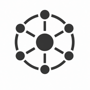
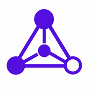
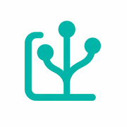
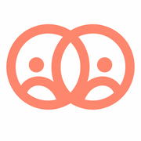

🗂 自作システム
ローカルHTMLツール集 — PWA対応
タスク・記録

Task OS
ショット・ルーチン・プロジェクト統合タスク管理
タスク
Shot Task OS
単発タスクに特化したシンプルな管理ツール
タスク
Routine OS
習慣・ルーティンの管理と記録
ルーティン

Project OS
経営PJ・分岐点・マイルストーン管理
プロジェクト
日次・振り返り
1day
日次の思考ログ・確認・記録
日次
Reflect OS
内省・思想変化・気づきのログ
思考

KOSOLog
行動・施策の効果を記録・分析
ログ
リスト・人間関係
100list
やりたいこと・未来リスト100
ビジョン
Social Universe
人間関係の棚卸し・マッピング
人間関係

ヒトメモ
人物プロファイリング・メモシステム
人間関係